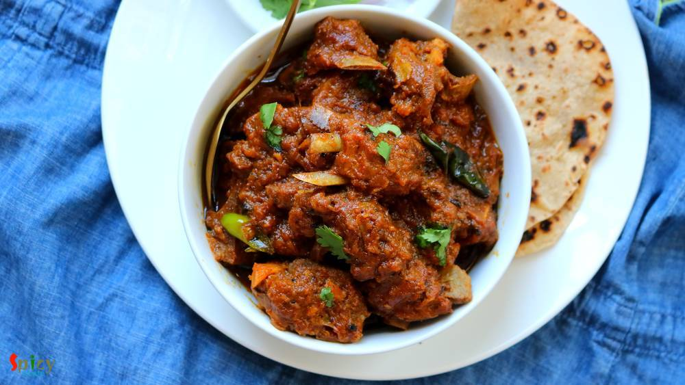
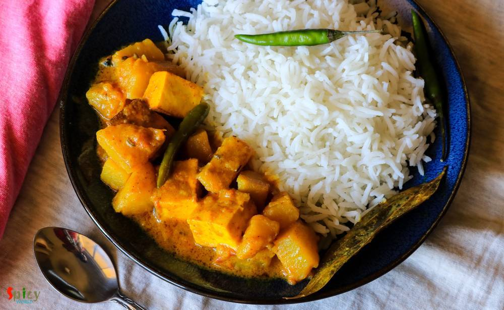
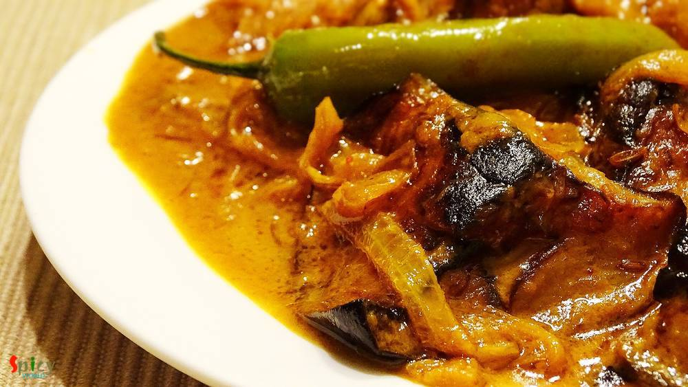

Simple and Easy Recipes
Posts on 'curry'

Nonveg Recipe
Jan 12, 2020
Chicken Bharta with Butter naan is an unbeatable combo. Fragrant and creamy this gravy will always make your meal special. From younger to elder Chicken Bharta is loved by all. This is not my first post on Chicken Bharta, there is another delicious recipe of it which I made few months back. You can try that too, click the name to see that recipe kolkata style chicken bharta One day while cooking B ...


Nonveg Recipe
Sep 5, 2019
Sorshe bata (mustard paste) diye Mach (fish) is a staple for Bengali. I truly love every form of bengali fish curry from Jhol to Kaliya with some steamed rice. My mom makes this Sorshe bata diye Mach very often but I have never tried it with onion, ginger and garlic. One day I came across this Sorshe Salmon recipe of Somedutta's (my friday food swings) and it caught my attention. I gave it a try, ...

Nonveg Recipe
Sep 24, 2015
Yesterday morning during surfing net I saw an eyecatching picture of Chicken Dak Bunglow curry. It made me doing immediate preparation for dinner.Trust me, after dinner there was literally nothing in our plate except bones:-) It became so damn tasty ! I once ate the mutton version of this curry. That was also finger licking delicious, will upload that soon. Do give this recipe a try and I am sure ...

Nonveg Recipe
Feb 26, 2019
Dalna means a curry which contains potato with other vegetables or protein. But potato is a must for Dalna. Some also call it Torkari. Summer is coming and so is sweaty tiredness with it. If you don't want to spend long time in the kitchen, no worries! I have a solution. Dimer Dalna or Egg and Potato Curry is the most simple and easy recipe which can easily feed a crowd. Anyone can enjoy a good, t ...

Veg Recipe
Feb 10, 2019
Niramish means without onion and garlic. Usually when we offer a meal to god / goddess with our respect and devotion, we call it 'Bhog' / 'prasad' . In any prasad, this Aloor Dom is a must with khichdi and chutney. This recipe is without onion and garlic, that's why I mentioned 'niramish'. During monsoon you can also enjoy this with khichuri, beguni and chutney or in weekend breakfast make some lu ...

Nonveg Recipe
Oct 2, 2018
Mutton Kosha is a Bengali delicacy which can be served with plain rice / basonti pulao / luchi. Mutton kosha requires patience, kosha means slow cooking in oil and spices. Off course to hurry up the process you can use pressure cooker, but slow cooking is recommended and this mutton curry like any other curry tastes better on next day. We have one more variance of the Mutton Curry called Kosha Man ...

Nonveg Recipe
Sep 13, 2018
Mughlai chicken curry is a thick, nut based gravy dish from the Mughlai (awadhi) cuisine. The sauce of this Mughlai Chicken curry is very rich so you can serve this with naan, roti or light pulao. In this recipe first marinated chicken will be fried then cooked in onion, tomato gravy with lots of other flavorful ingredients. Last Saturday my family enjoyed it thoroughly, now its time for you to en ...

Nonveg Recipe
May 23, 2016
Last week I was thinking that my blog doesn't have the recipe of 'mangsher ghugni' and being a Bengali I felt very awkward. There is no Bengali in the world who doesn't know about this dish ... yes, 'mutton ghugni' is that much famous. On special occasions or guest's arrival in evening, 'mangsher ghugni' is a very common item we Bengalis make. It's a Indian version of 'chili'. We make the curry of ...

Nonveg Recipe
Sep 7, 2018
This is one of my favorite midweek curry so far. When you don't want to spend too much time in kitchen but still want to have something yummy, then this spicy egg (also called anda) curry is life saver. As you all know 'kosha' means slow cooking with oil and spices. I know what you are thinking - 'slow cooking' on weekdays? When the main ingredient is egg, then yes you can make this Egg Kosha in a ...

Nonveg Recipe
Aug 25, 2016
We all love to eat food from Dhaba (road side food joint) while traveling. Nowadays you can find many fake dhabas and taste of their food is also fake, nowhere close to the authentic ones. Luckily few old and original dhabas in India still sells the best meals. After tasting those foods, you will probably think that their cooks must have some kind of magical hands. I once tasted their 'mutton curr ...

Nonveg Recipe
Jul 5, 2018
In Bengal, one of the common non-veg curry is 'chicken kosha'. I think everybody is familiar with this name. Kosha / Bhuna is a process where you have to cook the meat with spices on medium - low flame in its own juices, if it gets dry then only add water as less as possible. It requires time but with chicken you can make it within an hour. One can make the same curry with mutton, potato, egg etc. ...
")
Nonveg Recipe
Mar 14, 2019
Chicken Bharta was prepared last weekend in our lunch. The recipe is Punjabi inspired Bengali dish. A very tasty shredded (pulled) chicken preparation which is famous throughout India. It has onion and tomato based gravy with beautiful flavor of kasuri methi and Garam masala. Of course, how can I forget about the Boiled Egg? To make an excellent Chicken Bharta you have to finish it off with boiled ...

Nonveg Recipe
Sep 20, 2016
I know it's been two weeks I didn't post anything due to settling down in India, but heyy now I am back with another interesting recipe from 'dhaba' gharana. Every place has their own style of dhaba / road side food joints. Whenever we plan any short trip within Bengal, we try to make the lunch stop at some popular Dhaba. Their 'torka-ruti' and 'chicken curry' with rice are must for us. I like the ...

Veg Recipe
Aug 11, 2016
Chanar Dalna is a very hearty vegetarian preparation with simple ingredients. My mom used to serve this curry with 'Luchi' and the pair was heavenly. 'Chana' means curdled milk or homemade paneer and 'Dalna' means curry. Both of them are Bengali words. You can definitely make this dalna on any puja / vrat days as they are onion and garlic free. I have already shared 'chanar kalia' recipe with you ...

Nonveg Recipe
Jun 22, 2016
'Keema Aloo' is my favourite curry when it comes to a fuss free but yummy dinner. It's so rich and spicy that there is no other meat curry which you can make in such a less time. I used mutton keema but feel free to use chicken mince. After adding the cubed potatoes, this dish becomes a killer ! Serve this with plain rice or paratha, every time 'keema aloo' will be a hit. It is also a very good ma ...

Veg Recipe
May 19, 2016
If your milk gets curdled, don't throw away, you can do a lot with it. Well, it's bengali style 'chanar kalia' where plain curdled milk / cheese balls are first deep fried and then cooked in a tomato based gravy. It's a vegetarian delicacy of Bengali cuisine. The dish tastes awesome and goes best with plain basmati rice. In any puja or special occasion, we make this dish and it always becomes the ...
 Curry")
Nonveg Recipe
May 2, 2016
There are some recipes which are classics. They don't need any upgradation. 'Kolhapuri Egg Curry' is from this category. This is a famous Maharashtrian dish in which boiled eggs are cooked into the 'kolhapuri' gravy ... it tastes million bucks ! This curry is rich + hot in taste and goes perfectly with steamed rice or plain chapatis. You can keep a large batch of this Kolhapuri masala in fridge fo ...

Nonveg Recipe
Apr 22, 2016
Are you a garlic loving person ? I am. As chicken is my favourite protien, so I had to combine these two in one dish. 'Lehsuni Murgh' is the perfect dinner choice I made last of last weekend. The dish has very minimum spices with beautiful roasted garlic flavour. This curry can be served with naan, roti or paratha. Recipe is very simple but it tastes heavenly.

Nonveg Recipe
Apr 18, 2016
The name sounds odd ? Well, I am not crazy, we call this mutton curry vegetarian because it has no onion and garlic. The food we usually offer to our god / godess is called 'bhog' which never contains onion and garlic. During 'kalipuja' or diwali, we Bengalis make this vegetarian mutton curry with the meat of 'pathaboli' (ritual). The taste of this curry is suprisingly delicious, even if there is ...

Nonveg Recipe
Apr 5, 2016
I can eat chicken curry in any mood, any day. Chicken was almost regular to our home. My father and I are true chicken lover and that's why my mom used make very plain and simple chicken curry on weekdays. Sometime when she was in hurry, she used to throw everything in a pan and came up with this tasty chicken curry. I also heard that villagers often make this kind of curry which needs no recipe, ...

Nonveg Recipe
Apr 4, 2016
Cooking fried kofta / balls in a rich gravy is an old school Bengali delicacy. I guess everybody loves to eat fried balls made with paneer, vegetables, chicken, fish, mutton etc, but after soaking them in a flavouful gravy they become scrumptious. I had some fish fillets in my fridge and couldn't find any better idea than this to use them. Process of making 'Kofta Curry' is tricky and little bit o ...
")
Veg Recipe
Mar 21, 2016
I have seen two types of cauliflower's roast curry from childhood, my mom makes the yellow + spicy version and the other one is white + sweet version. Both of them are my favourite but today I am sharing the recipe of second version because I have already shared a similar as 1st one cauliflower curry in my earlier post. So, in Bengal this cauliflower white curry becomes very popular during festiva ...

Nonveg Recipe
Mar 15, 2016
This prawn curry is a family recipe and my mom-in-law is an expert of making it. It's a very common fish curry in Bengali households. We love to eat prawns in many forms, but his favorite is this one. I would suggest you to make this dish with small prawns, you will get much more flavours. First I fried the prawns, potato and cauliflowers, then cook them with gravy. Plain rice will go very well wi ...

Nonveg Recipe
Mar 4, 2015
Traditional Bengali lunch on sunday is this mutton curry along with plain rice, raw onion chunks and green chilies. After lunch we need a long nap (bhaat ghum). There was a say that we Bengalis can not eat food without potato. This is true. You have to add potatoes to this dish because there are many people like me and my husband who likes potatoes more than mutton pieces specially in this curry. ...

Nonveg Recipe
Mar 3, 2016
We bengalis usually eat 3-4 items with rice in lunch. Yess, its the family tradition in every household in Bengal. Whereas in USA, either it's lunch or dinner, I always make one curry with rice or roti. Sometimes I wonder how our moms, grand mas and mom-in-laws gets time to cook so many items. 'Doi Maach' is an another tasty bengali fish curry which goes very well with steamed rice. It's a classic ...

Nonveg Recipe
Jan 26, 2016
Its winter, the season of colourful veggies... One of my favourite veggie is 'green peas' / Koraishuti. You can make so many items with these tiny green balls like, 'matar paneer', 'peas kachori', 'dum aloo with peas', 'khichdi', 'veg daal', 'cabbage curry with peas' etc. But 'fish curry with green peas paste' may seems new to somebody. Its nothing but a dry fish curry with a tasty extra addition ...
 / Potato and Cauliflower curry / Aloo Fulkopir torkari")
Veg Recipe
Jan 25, 2016
We, nonvegetarian people, generally ordered nonveg dishes while eating at restaurants or dhabas. But we also love to eat home cooked vegetarian meals. In one of our trip to Digha before marriage, we made a stop at the famous 'Sher-e-punjab' for heavy breakfast. We ate there several times before but never did breakfast, so, that was our first time. As it was morning, we orderd veg like 'aloo parath ...

Nonveg Recipe
Jan 20, 2016
Few days before I saw a fantastic picture of mutton curry in facebook. The caption was 'adabata aar kacha lonka diye mutton'. After seeing that picture, I decided to make it on dinner with some steamed rice. As the picture didn't provide the detailed recipe, except ginger and green chilies, I followed my own instinct while making the curry. After finishing, I got a thin, flavorful, tasty gravy and ...

Nonveg Recipe
Jan 19, 2016
As I am Bengali, my favourite fish curry is this one. My husband is also a huge fan of fish and specially this curry. It goes best with hot plain rice. This is a very easy process and the recipe is pretty simple. Try this in your kitchen and let me know how it tastes.
")
Veg Recipe
Nov 25, 2015
I have a friend in New Jersy, Monica, who makes the best chana masala ever. I learned this recipe from her. Since we moved from Jersy I missed her and her cooking very much. This is a punjabi dish, goes very well with bhatura, puri or roti. The recipe is very simple and it tastes delicious.

Veg Recipe
Nov 15, 2015
'Khatta' means tangy/sour and 'baingan' means eggplant/begun. Most probably this dish is from Kashmiri cuisin. I do not have much knowledge about this cuisin but I can assure you that you will never forget this eggplant recipe. Last wednesday we both wanted to eat veg in dinner and I had an eggplant(begun) in my fridge. So, I googled for some spicy veg recipes made with eggplant, and my eyes got s ...

Veg Recipe
Nov 11, 2015
This is a no onion and no garlic recipe. Usually in many 'puja's we make this kind of dishes. 'Potato curry' goes very well with 'luchi', 'paratha', 'kochuri' etc. But last tuesday I tried a new combo with 'bhatura'. Magically we both loved and enjoyed it very much. I learned this potato curry from my mom. She also follow the same recipe for 'niramish aloo dom' and it tastes always good. Try this ...

Nonveg Recipe
Nov 6, 2015
Bengalis make various kinds of fish curry with different types of fishes. The most simple and easy one is 'macher jhol' or fish curry. 'Jhol' means runny version of a curry. This dish is usually served as lunch with steamed rice and we all are fan of it. In 'macher jhol' you can use rohu / katla / tilapia / pomfret / pabda etc. One can add many kinds of vegetables like potato, cauliflower, eggplan ...

Veg Recipe
Oct 18, 2015
We all love to eat 'aloor dom' along with 'luchi' or 'kochuri'. This is our comfort food. It also goes very well with 'pulao' or 'fried rice'. This one is my mom's recipe. She make the tastiest aloor dom ever. Yesterday I tried this recipe and it came out perfectly.Just give it a try.

Nonveg Recipe
Oct 16, 2015
We all love to eat omelet. My grandma used to make this dish with her love and care. That is why it always turned out so tasty. Today I am sharing this recipe with little changes. Please make this at your home.

Nonveg Recipe
Oct 7, 2015
In India we all love "dhaba" foods and also we love eggs. Mostly their dishes are spicy. So, today I am sharing this spicy dish with you. Please try this at your home.

Nonveg Recipe
Sep 23, 2015
In Bengali's weekdays lunch menu fish has to be there. There is a say 'mache-bhate-bangali' indicates our common meal is fish curry and rice. This is a special dish for party, occasions or gatherings. Macher kaliya goes very well with sweet pulao, fried rice or even plain rice.
")
Nonveg Recipe
Sep 22, 2015
I am an inborn chicken lover. During summer it is not always healthy to eat spicy chicken preparations. For this reason my mom used to make this simple jhol / curry for me. It tastes really good with plain hot rice or plain roti. Give it a try.
")
Veg Recipe
Sep 21, 2015
Whenever you are going to describe anything about Bengali, you have to mention 'posto'/poppy seeds. They make planty of dishes with posto like 'piyaj posto', 'potol posto', 'posto bora' etc and they all are my favourite dishes. 'Aloo Posto' is one of the popular item among the posto category. You will love to eat this with hot plain rice and daal.